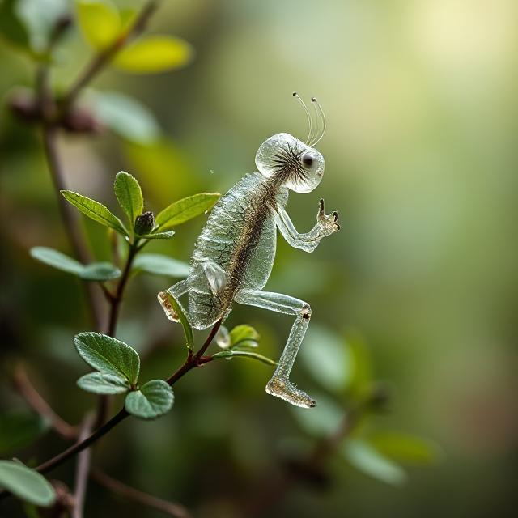
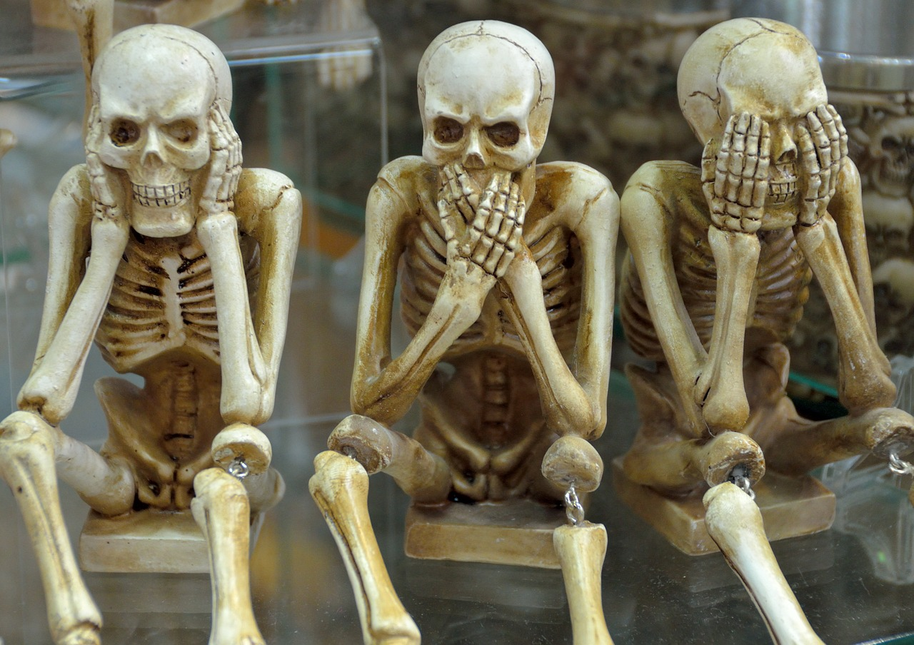

Tkáně
Tělesné tkáně jsou soubory buněk, které mají podobnou nebo stejnou strukturu a plní určitou funkci. Tvoří je především voda (asi dvě třetiny) a bílkoviny. Mezi základní typy tkání patří:
- Epitelová tkáň – slouží k ochraně těla, jako je kůže či pokožka
- Pojivová tkáň – zahrnuje několik podtypů:
- Vazivo, jež poskytuje tělu soudržnou strukturu.
- Chrupavka pokrývá kloubní části kostí a zajišťuje hladký pohyb kloubu v kostní jamce.
- Kost je pevná, silná a silně mineralizovaná.
- Zubní tkáň, která je nejpevnější tkání v těle.
- Trofická pojiva, což jsou tekutá pojiva, jako krev a míza.
- Svalová tkáň – umožňuje pohyb.
- Nervová tkáň – je základem pro přenos nervových impulzů.
Kostní tkáň
Kosti jsou klíčovou součástí lidské kostry a jejich vlastnosti se vyvíjely v průběhu historie v závislosti na nárocích na zatížení těla. Různé kosti mají odlišnou strukturu a pevnost podle toho, jak jsou zatěžovány. Kostní tkáň je tvořena buňkami zvanými osteocyty a obsahuje dvě hlavní složky:
- Organická složka (≈ ⅓): kosti dodávají pružnost, mezi nimiž je hlavní bílkovina osein.
- Anorganická složka (≈ ⅔) zajišťují pevnost kostí, přičemž dominantními sloučeninami jsou Ca3(PO4)2 (fosforečnán vápenatý) a CaCO3 (uhličitan vápenatý).
Se stářím kostní tkáň mění svou strukturu, kdy přibývá anorganická hmota, což může vést ke zvýšené lámavosti kostí. Pochopitelně i kosti potřebují živiny – ty dodávají cévy, vedoucí v kostních tkáních.
Existují dva hlavní typy kostní tkáně:
- Houbovitá (spongiózní), která se nachází zejména v hlavicích dlouhých kostí.
- Hutná (kompaktní), která tvoří většinu těla dlouhých kostí.
Dlouhá kost je složena z několika vrstev, včetně okostnice, houbovité tkáně, hutné tkáně, kostní dřeně, diafýzy (střední část kosti), epifýzy (konce kosti) a kloubní chrupavky. Vnitřek kosti není plný, což zajišťuje její vetší odolnost.
Struktura houbovité kosti inspirovala některé stavby v gotickém stylu. Gotické stavby využívají podobný princip struktury ve svých klenbách a podpůrných strukturách, čímž připomínají pletencovité struktury houbovité kosti.
Vývoj a růst kostí
Kosti se během vývoje vytvářejí z chrupavky nebo vazivového základu prostřednictvím procesu zvaného osifikace (neboli kostnatění), kdy osifikační jádra rozšiřují tvorbu kostní hmoty. Kosti rostou jak do šířky, tak do délky; do šířky díky okostici, do délky díky růstové chrupavce, která je u některých kostí otevřená.
Kosti se spojují různými způsoby:
- Vazivem, což zajišťuje pevné spojení a pružnost, jak tomu je například u švů na lebce. Pružnost je důležitá pro správný vývoj lebky u dětí, protože se u nich zvětšují ploché kostu lebky (výplň mezi nimi je zajištěna vazivovými lupínky).
- Chrupavkou, jímž je zajištěn pohyb mezi kostmi a probíhá minimalizace tření díky tekutině synovii (mazivo).
- Srůstem, jak je tomu u pánevní kosti.
- Pohybovým spojením ve formě kloubu, kde hlavice jedné kosti zapadá do jamky druhé kosti.
Kostra člověka
- Osová kostra
- lebka, která se skládá z neurokrania (mozková část lebky) a splanchnocrania (obličejová část lebky),
- hrudník,
- páteř.
- Kostra končetin
- kostra horní končetiny,
- kostra dolní končetiny.
Příklady onemocnění
- Osteoartritida, degenerativní onemocnění kloubů.
- Osteoporóza, která vede k úbytku kostní hmoty a zvyšuje lámavost kostí.
- DNA, což je zánětlivá nemoc způsobená nahromaděním kyseliny močové v těle.
- Zlomeniny, což jsou běžné úrazy, které ovlivňují kosti.